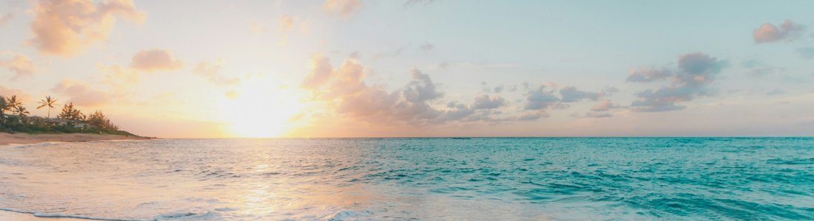
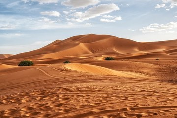

Мир путешествий
Туризм - это временные поездки людей за пределы места постоянного проживания с целью отдыха, познания, лечения, работы и других целей. По определению Всемирной туристской организации при ООН (ЮНВТО, англ. UN Tourism), туристом считается человек, который находится в поездке не дольше одного года подряд. Отрасль очень чувствительна к внешним событиям: в 2020 году из-за пандемии COVID-19 число международных прибытий туристов, по данным ЮНВТО, сократилось на 74%, то есть примерно на 1 млрд поездок по сравнению с 2019 годом. Ежегодно 27 сентября отмечается Всемирный день туризма.
Раздел 1: Понятия и списки
Основные понятиянумерованный список
- Туризм - временные поездки в другую местность (до одного года подряд) с целью отдыха, познания, лечения, деловых и иных целей.
- Рекреация - восстановление сил человека: отдых, оздоровление, развлечения вне привычной повседневной среды.
- Дестинация - место назначения, туристское направление, которое привлекает посетителей.
- Сезонность - зависимость числа туристов от времени года, погоды и школьных каникул.
Этапы планирования поездкинумерованный список
- Определить цель поездки: отдых, познание, спорт, работа
- Выбрать дестинацию и сезон с учётом климата
- Проверить документы и визовые правила
- Купить билеты и забронировать жильё
- Составить маршрут и бюджет
Основные виды туризмамаркированный список
- Рекреационный (пляжный отдых, оздоровление)
- Культурно-познавательный
- Деловой
- Спортивный и активный
- Экологический
Классификация по направлению поездоквложенный список
- Внутренний туризм
- Поездки жителей страны по своей стране
- Международный туризм
- Въездной - иностранцы приезжают в страну
- Выездной - жители страны едут за границу
Раздел 2: Фотографии

Побережья - главный ресурс рекреационного туризма. Главные факторы выбора: температура воды, сезон и транспортная доступность.

Необычные природные ландшафты привлекают путешественников, интересующихся природой и фотографией.
Большие фотографии
Нажмите на миниатюру: фотография 600 на 400 пикселей откроется в новой вкладке.
 Открыть крупно Открыть крупно |
 Открыть крупно Открыть крупно |
 Открыть крупно Открыть крупно |
Раздел 3: Таблица фактов
| Фото | Объект | Ключевые данные | Ссылки |
|---|---|---|---|
 | Горы | Высшая точка планеты - Джомолунгма, 8848,86 м | Страница о горах Горы в Википедии |
 | Пустыни | Антарктида - крупнейшая пустыня мира, около 14 млн км² | Страница о пустынях Пустыня в Википедии |
 | Моря и океаны | Мировой океан занимает около 71% поверхности Земли | Страница о море Мировой океан в Википедии |
Раздел 4: Источники
- Туризм
- Всемирная туристская организация
- Всемирное наследие ЮНЕСКО
- ЮНВТО: 2020 - худший год в истории туризма (на английском)